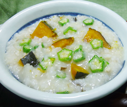

かぼちゃ入りの薬膳粥
- 調理時間：50 分
- （一人当たり）
- カロリー：203kcal
- たんぱく質：14.7g
- 脂質：1.3g
- 炭水化物：34.0g
- 塩分：1.4g


＜2人分＞
- 生米
- 100g
- 鶏ガラ
- 1羽分
- 水
- 鶏ガラが
かぶる程度 - 長ネギ
- 適量
- オクラ（小口切り）
- 2本
- カボチャ（一口大に切る）
- 100g
- 塩・コショウ
- 小さじ1/2
- ・生姜（薄切り）
- 1片
- ・ダイコン（イチョウ切り）
- 100g
- ・ニンジン（イチョウ切り）
- 50g
- ・シメジ
（石づきをとり、手でほぐす） - 30g
- ・エノキ（2～3cm幅に切る）
- 30g
- ・生きくらげ
（一口大に切る） - 2～3枚
- ・鶏ササミ（一口大に切る）
- 50g
- ・ホタテ（熱湯をかける）
- 3～4個
A


- 鶏ガラでだしをとる。
※鶏ガラにこびりついている汚れを洗い落とした後、熱湯をかけて湯引きする。
鍋に鶏ガラと水、長ネギなどを入れて強火で沸かし、アクをとる。
その後、弱火でコトコト煮る。 - 野菜は各々切るなど、下準備をする。ササミは食べやすい大きさに切る。
- 米を洗い、ザルにあげる。
- 鍋に鶏ガラスープ800ml、生米、Aの食材を入れて火にかける。
米と野菜がやわらかくなるまで煮る。塩、コショウで味をととのえる。 - 時間差でカボチャ、オクラを加えてさらに煮て、カボチャがやわらかくなれば完成。
かぼちゃ入りの薬膳粥
記録的な猛暑から、そろそろ秋の気配を感じる今日この頃。次の季節に備えて体力のつく食事を心がけたいものです。季節の変わり目は、身体に負担のかからないお粥がおすすめ。
さらに今回のように食材豊富なお粥は、幼児食から介護食まで対応できるやさしい料理です。
カボチャに多く含まれるβ－カロテンは抗酸化作用があり、緑黄色野菜の代表選手。皮膚や粘膜の健康を保つはたらきがありますので、これからの乾燥の時期の感染症を予防します。また、カボチャに含まれるビタミンＣは、比較的熱に強いので加熱料理にも適します。
カボチャ以外の様々な食材でご家庭の味を楽しむのも良いですね。